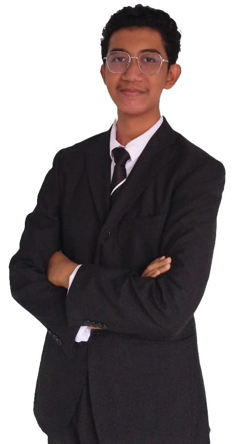

INTRODUCTION
بِسْمِ اللهِ الرَّحْمٰنِ الرَّحِيْمِ السَّلاَمُ عَلَيْكُمْ وَرَحْمَةُ اللهِ وَبَرَكَاتُهُ
Salam Sejahtera,
Salam UiTM Dihatiku,
Salam Malaysia Madani.
Alhamdulillah dan syukur kepada Allah SWT di atas limpahan rahmat dan inayat-Nya dapat sama-sama kita bersua pada ketika ini. Pertama sekali, saya ingin mengucapkan jutaan terima kasih kerana sudi meluangkan masa berharga anda dan selamat datang ke laman web persendirian saya. Sebelum kita lanjut ke topik pertama, marilah kita bersama-sama mengetahui tujuan atau objektif penghasilan laman web ini.
Terdapat beberapa objektif yang terselit dalam penghasilan laman sesawang ini, termasuklah:
Dengan berakhirnya penerangan objektif tugasan ini, maka marilah kita beralih kepada kandungan utama bagi tugasan ini. Dalam tugasan ini, kami diarahkan untuk menghasilkan sebuah laman sesawang persendirian yang berkonsepkan pengenalan diri. Oleh itu, tanpa melengahkan masa, ayuhlah sama-sama kita menelusuri topik pertama kita pada hari ini; Pengenalan.
|  | Nama | Amir Yahya Bin Baharum |
| No. Matriks | 2022696884 | |
| Lahir pada | 19/10/2004 | |
| Tempat Lahir | Pusat Rawatan An-Nisa', Kota Bharu, Kelantan | |
| Bilangan ahli keluarga | 9 orang | |
| Anak ke | Ke-4 daripada 4 adik-beradik | |
| Alma Mater |
|
|
| Media Sosial |
{kind=link}
{kind=link}
{kind=link}